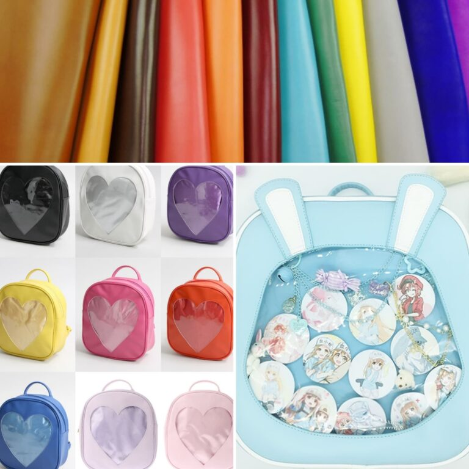
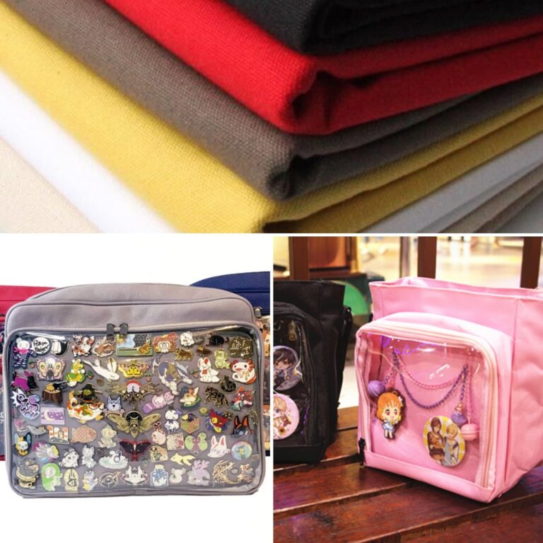
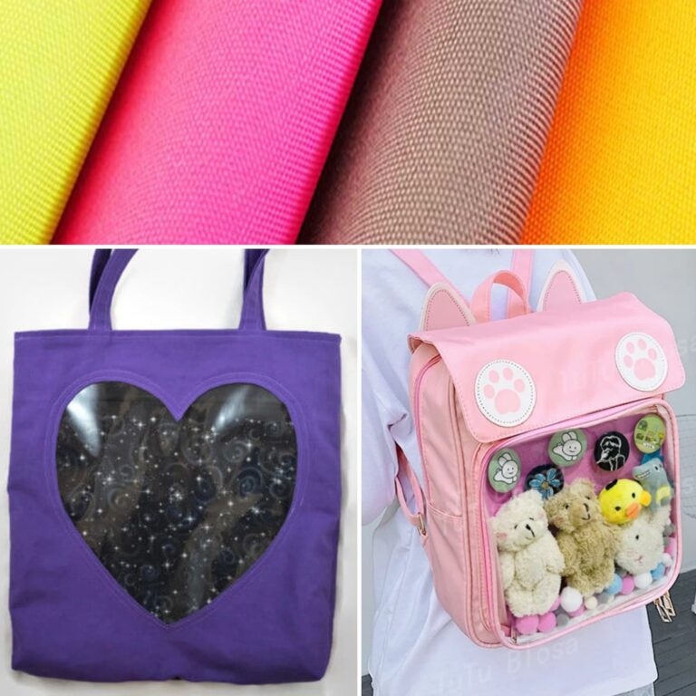

Itabag Materials
There are a LOT of different bag designs out there. Along with making sure the bag is the right style and look for your new itabag project, you should also pay attention to the material it’s made out. Here are some pros and cons of the most common materials.
Pleather or PVC

PROS
- Lots of color options
- Can have screenprinting or other designs
- Main bag is sturdy (added on parts like wings easy to fold)
CONS
- Puncture holes can’t be healed
- Easily scuffs
- Often have weak seams for backpack and shoulder straps
- Low lifespan
Canvas

PROS
- Very sturdy
- Easy to clean
- Puncture holes can be healed
- Long lifespan
CONS
- Limited color options
- Printed designs not common
Nylon or Other Fabrics

PROS
- Decent amount of colors and designs available
- Generally easy to clean
- Puncture holes somewhat able to be healed
CONS
- Not as sturdy (able to stand up on it’s own)
- Some straps are poorly attached (depends on bag design)